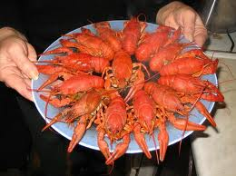

На полном
безрыбье за рыбу сойдет и рак, которого можно не только приготовить и съесть, но и использовать в качестве рыболовной наживки. Живут раки в чистых протоках и речках, но иногда встречаются в озерах.
Днем рак в основном находится в своей норе вырытой под крутыми тенистыми берегами, под корягами и камнями, а вечером и ночью перемещается по дну в поисках добычи. Зимой рак уходит на глубину и прячется в норах.
Ловля раков руками.
Самое лучшее время для ловли раков ночью, через 2 - 3 часа после захода Солнца, раки выползают на прибрежные отмели, а в некоторых случаях даже на сушу. Раки очень любят свет, поэтому
яркий костёр на берегу или
факел изготовленный из бересты, не только помогут увидеть рака, но и привлекут его, тем самым увеличив ваш улов. Готовить пойманных раков желательно пока они еще живые, мясо мертвого рака не вкусно.
Днем раков можно ловить руками, разыскивая их в норках, под корягами и камнями. При подъеме камней надо быть готовым к тому, что рак очень быстро плавает, причем задом наперед, то есть головой назад, отталкиваясь от воды хвостом.
Поэтому лучше конечно всего такую ловлю устраивать на пару, где один ворочает камни, а другой ловит добычу. Для предотвращения порезов и защиты рук при ловле рекомендуется одеть перчатки.
Ловля раков острогой.
Острога для ловли раков представляет из себя длинную, расщепленную с одного конца палку. В расщеп вставляется клинышек таким образом, чтобы края палки расходились на несколько сантиметров. Палку надо брать свежую, сырую, так как сухая малоупруга и может легко сломаться.
Для ловли с помощью остроги возле самого берега, где вода особенно прозрачна, надо набросать приманку. Острога осторожно подводится к раку и втыкается в дно. Рак попадает между развилками и защемляется вверху расщепа, после чего его остается только вытащить из воды руками.
Ловля раков с помощью специальной снасти.
Деревянную палку заостряють с одного конца и прикрепив к нему приманку втыкают в дно водоема. Предварительно приманку следует обернуть мелкой сеткой, сетчатой тканью, капроновым чулком. Для приманки подойдут рыба, мясо, лягушки или кузнечики. При этом чем испорченней и вонючей будет приманка, тем лучше, так как раки питаются падалью. Запах приваживающий раков будет сильнее, если тушку надрезать вдоль спины до позвонков и вывернуть мясо наружу.
Почуяв приманку рак ухватить ее клешнями, в этот момент его следует вытаскивать. Обычно рак крепко удерживает добычу, но все же извлекать его из воды следует аккуратно, при резких движениях рак может сорваться с приманки.
К приманке можно привязать достаточной длины кусок лески или веревки, конец которых крепят к поплавку, при необходимости к приманке подвесить дополнительное грузило. Затем переодически, через некоторое время, снасть проверяют на наличие добычи вытаскивая из воды.
Ловля рака с помощью раколовки.
Раколовка представляет из себя деревянный, металлический или из толстой стальной проволоки обруч диаметром около полуметра или немного больше, обтянутый сетью или тканью. На середине круга прикрепляется груз для тяжести и приманка. К обручу привязываются три-четыре куска веревки, лески, которые в свою очередь, привязываются к подъемной веревке или леске, длина которой подбирается в зависимости от глубины водоема.
Леска закрепляется на конце длинной палки-удилища. Круг опускается в воду в тихом, глубоком месте, ближе к крутому берегу, то есть там, где обычно больше всего рачьих нор. Раз в 15 - 20 мин круг осторожно поднимается на поверхность. Иногда за один улов можно поймать до десятка раков.
Ловля раков обувью.
В крайнем случае можно попробовать ловить раков на "башмак". Для этого обувь с опущенной внутрь приманкой на длинной веревке погружается на дно водоема. Забравшегося внутрь, на запах, рака поднимают на берег.
Источник : http://survival.com.ua/sovs/sov16.html